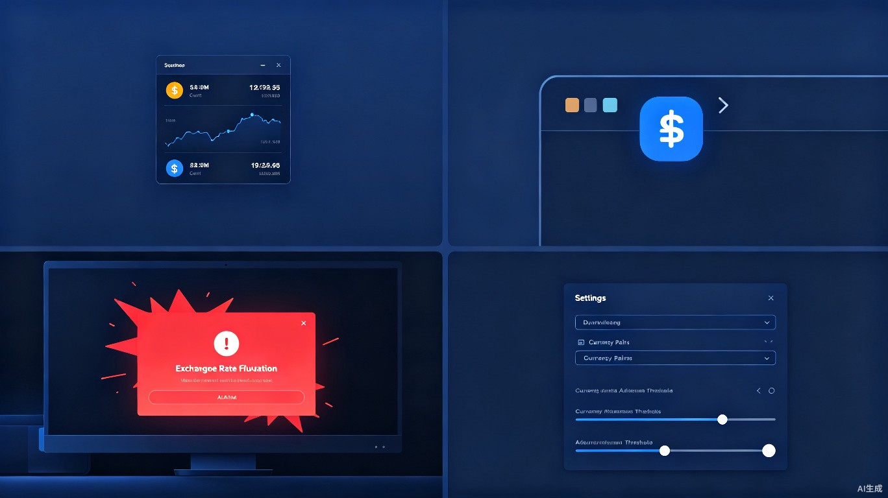
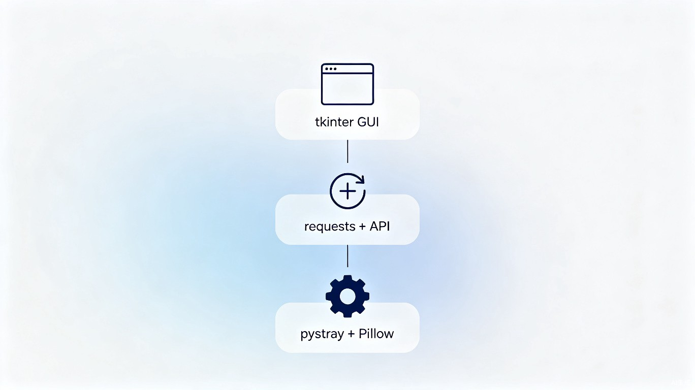

在全球化日益深入的今天，汇率波动直接影响每个人的生活。然而，获取汇率信息的过程并不够便捷。
每次想查看汇率，都需要拿起手机或打开电脑浏览器，搜索"美元兑日元汇率"——步骤多、耗时长，无法做到随看随得。
汇率剧烈波动时，普通用户无法第一时间获知信息。对于跨境贸易从业者、外汇投资者而言，几分钟的延迟可能意味着不小的损失。
现有的专业交易软件界面复杂、价格昂贵，对普通用户来说学习成本太高。我们需要一款零门槛的轻量级工具。
从实时显示到智能提醒，每一个功能都围绕"让汇率信息触手可及"这一目标精心设计。
运行后会在桌面显示一个精巧的悬浮小窗口，默认展示 USD/JPY 实时汇率。窗口采用无边框半透明设计，支持鼠标拖拽自由移动，且默认置顶不被其他窗口遮挡。
汇率数字以醒目的金色大字号呈现，下方实时显示涨跌变动幅度和方向箭头，一目了然。

不需要查看汇率时，一键最小化到系统托盘。程序继续在后台运行，图标驻留在右下角任务栏中。随时双击图标即可恢复显示。
右键托盘图标可快速打开"显示"和"退出"菜单，操作简洁高效，不打扰正常工作。
当汇率在两次刷新之间发生剧烈波动（默认超过 0.5%），桌面中央会弹出一个醒目的警告窗口。窗口以红色（上涨）或绿色（下跌）醒目配色标注变动方向、变动前后的汇率数值及百分比变化。
警报窗口 30 秒后自动关闭，也可手动点击确认关闭，确保不打扰正常使用。
通过内置的设置面板，用户可以自由调整：货币对（支持 170+ 种货币）、自动刷新频率（10秒~3600秒）、警报阈值（0.1%~10%）、窗口是否置顶、是否启用警报等。
所有配置自动保存到本地 JSON 文件，下次启动时自动恢复上次设置。
后台定时获取最新汇率数据
设置、刷新、隐藏、退出一键操作
设置自动保存，重启无需重配
不收集任何用户数据，完全本地运行
2026年上半年，美元兑日元汇率持续走高，从年初的 149 一路攀升至 162 以上，引发市场广泛关注。
仅使用 Python 标准库和少量成熟第三方库，整个项目代码不到 600 行，任何人都可以阅读、理解和贡献。
主流编程语言，开发效率高，社区生态丰富，跨平台支持良好。
Python 内置 GUI 库，无需额外安装依赖，适合构建轻量级桌面界面。
系统托盘图标库 + 图像处理库，实现托盘驻留和自定义图标绘制。
通过免费的 exchangerate-api.com 获取实时汇率数据，支持 170+ 种货币，无需 API Key。
使用多线程架构，汇率更新在后台线程中进行，不阻塞 GUI 界面响应。

这款工具不仅仅是技术产品，更是一项将金融信息"民主化"的公益尝试。让每个人都能平等、便捷地获取影响生活的关键数据。
无需昂贵软件，无需专业知识，安装 Python 后运行一个文件即可。对老年用户、非技术人员尤为友好，真正实现技术普惠。
出国务工人员、留学生家庭、小型外贸商户等群体对汇率高度敏感，但往往缺乏专业工具。本工具帮助他们及时获取信息，做出更明智的决策。
所有代码开放，任何人都可以学习、修改、分发。鼓励社区贡献，支持更多货币、更多平台（macOS、Linux），实现可持续的公益价值。
工具完全在本地运行，不收集任何用户数据，不上传任何信息到云端。所有配置存储在本地 JSON 文件中，用户隐私得到充分保障。